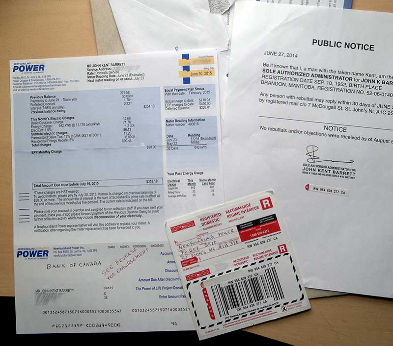

Bills of Exchange Act
R.S.C., 1985, c. B-4
An Act relating to bills of exchange, cheques and promissory notes
SHORT TITLE
Marginal note:Short title
1. This Act may be cited as the Bills of Exchange Act.
- R.S., c. B-5, s. 1.
INTERPRETATION
Marginal note:Definitions
-
“acceptance”
« acceptation »
-
“acceptance” means an acceptance completed by delivery or notification;
-
“action”
« action »
-
“action” includes counter-claim and set-off;
-
“bank”
« banque »
-
“bank” means a bank or an authorized foreign bank within the meaning of section 2 of the Bank Act;
-
“bearer”
« porteur »
-
“bearer” means the person in possession of a bill or note that is payable to bearer;
-
“bill”
« lettre »
-
“bill” means bill of exchange;
-
“defence”
« défense »
-
“defence” includes counter-claim;
-
“delivery”
« livraison »
-
“delivery” means transfer of possession, actual or constructive, from one person to another;
-
“endorsement”
« endossement » ou « endos »
-
“endorsement” means an endorsement completed by delivery;
-
“holder”
« détenteur »
-
“holder” means the payee or endorsee of a bill or note who is in possession of it, or the bearer thereof;
-
“issue”
« émission »
-
“issue” means the first delivery of a bill or note, complete in form, to a person who takes it as a holder;
-
“non-business days”
« jours fériés »
-
“non-business days” means days directed by this Act to be observed as legal holidays or non-juridical days, and any other day is a business day;
-
“note”
« billet »
-
“note” means promissory note;
-
“value”
Version anglaise seulement
-
“value” means valuable consideration.
- R.S., 1985, c. B-4, s. 2;
- 1999, c. 28, s. 148.
PART IGENERAL
Marginal note:Thing done in good faith
3. A thing is deemed to be done in good faith, within the meaning of this Act, where it is in fact done honestly, whether it is done negligently or not.
- R.S., c. B-5, s. 3.
Marginal note:Signature
4. Where, by this Act, any instrument or writing is required to be signed by any person, it is not necessary that he should sign it with his own hand, but it is sufficient if his signature is written thereon by some other person by or under his authority.
- R.S., c. B-5, s. 4.
Marginal note:What required of corporation
5. In the case of a corporation, where, by this Act, any instrument or writing is required to be signed, it is sufficient if the instrument or writing is duly sealed with the corporate seal, but nothing in this section shall be construed as requiring the bill or note of a corporation to be under seal.
- R.S., c. B-5, s. 5.
Marginal note:Computation of time
-
6. (1) Where, by this Act, the time limited for doing any act or thing is less than three days, in reckoning time, non-business days are excluded.
-
Marginal note:Saturdays
(2) In all matters relating to bills or notes,
-
(a) if the time for doing any act or thing expires or falls on a Saturday, that time is deemed to expire or fall, as the case may be, on the next following business day;
-
(b) a bill or note payable on demand cannot be duly presented for acceptance or payment on a Saturday; and
-
(c) failure to do any act or thing on a Saturday does not give rise to any rights.
-
-
Marginal note:Cheques
(3) Notwithstanding any other provision of this Act, a cheque may be presented and paid on a Saturday or a non-juridical day if the drawee is open for business at the time of the presentment and the presentment in all other respects is in accordance with this Act, and the non-acceptance or non-payment of a cheque so presented gives rise to the same rights as though it had been presented on a business day other than a Saturday.
-
Marginal note:Where bank not open for business
(4) In all matters relating to bills or notes, notwithstanding any other provision of this Act, if a branch of a bank carrying on business is not open for business on a business day
-
(a) the time for doing any act or thing at the branch, if the time expires or falls on that day, is deemed to expire or fall, as the case may be, on the next following business day on which the branch is open for business;
-
(b) a bill or note payable on demand cannot be duly presented for acceptance or payment at the branch on that day; and
-
(c) failure to do any act or thing by reason of the branch not being open for business on that day does not give rise to any rights.
-
- R.S., c. B-5, s. 6.
Marginal note:Crossing dividend warrants
7. The provisions of this Act relating to crossed cheques apply to a warrant for payment of dividend.
- R.S., c. B-5, s. 7.
Marginal note:Bank Act not affected
8. Nothing in this Act affects the provisions of the Bank Act.
- R.S., c. B-5, s. 8.
Marginal note:Common law of England
9. The rules of the common law of England, including the law merchant, save in so far as they are inconsistent with the express provisions of this Act, apply to bills, notes and cheques.
- R.S., c. B-5, s. 10.
Marginal note:Protest evidence
10. A protest of any bill or note within Canada, and any copy thereof as copied by the notary or justice of the peace, is, in any action, evidence of presentation and dishonour, and also of service of notice of the presentation and dishonour as stated in the protest or copy.
- R.S., c. B-5, s. 11.
Marginal note:Copy of protest, evidence
11. Where a bill or note, presented for acceptance, or payable outside Canada, is protested for non-acceptance or non-payment, a notarial copy of the protest and of the notice of dishonour, and a notarial certificate of the service of the notice, shall be received in all courts as evidence of the protest, notice and service.
- R.S., c. B-5, s. 12.
Marginal note:Officer of bank not to act as notary
12. No clerk, teller or agent of any bank shall act as a notary in the protesting of any bill or note payable at the bank or at any of the branches of the bank in which he is employed.
- R.S., c. B-5, s. 13.
Marginal note:Purchase of patent right
-
13. (1) Every bill or note the consideration of which consists, in whole or in part, of the purchase money of a patent right, or of a partial interest, limited geographically or otherwise, in a patent right, shall have written or printed prominently and legibly across the face thereof, before it is issued, the words “Given for a patent right”.
-
Marginal note:Absence of necessary words
(2) If the words “Given for a patent right” are not written or printed on any instrument in the manner prescribed in subsection (1), the instrument and any renewal thereof is void, except in the hands of a holder in due course without notice of the consideration.
- R.S., c. B-5, s. 14.
Marginal note:Transferee to take with equities
14. The endorsee or other transferee of any instrument referred to in section 13 having the words “Given for a patent right” printed or written thereon takes the instrument subject to any defence or set-off in respect of the whole or any part thereof that would have existed between the original parties.
- R.S., c. B-5, s. 15.
Marginal note:Offence and punishment
15. Every person who issues, sells or transfers, by endorsement or delivery, any instrument referred to in section 13 not having the words “Given for a patent right” printed or written across the face thereof in the manner prescribed by that section, knowing the consideration of that instrument to have consisted, in whole or in part, of the purchase money of a patent right, or of a partial interest, limited geographically or otherwise, in a patent right, is guilty of an indictable offence and liable to imprisonment for any term not exceeding one year, or to such fine, not exceeding two hundred dollars, as the court thinks fit.
- R.S., c. B-5, s. 16.
PART IIBILLS OF EXCHANGE
Form and Interpretation of Bill
Marginal note:Bill of exchange
-
16. (1) A bill of exchange is an unconditional order in writing, addressed by one person to another, signed by the person giving it, requiring the person to whom it is addressed to pay, on demand or at a fixed or determinable future time, a sum certain in money to or to the order of a specified person or to bearer.
-
Marginal note:Non-compliance with requisites
(2) An instrument that does not comply with the requirements of subsection (1), or that orders any act to be done in addition to the payment of money, is not, except as hereinafter provided, a bill.
-
Marginal note:Unconditional order
(3) An order to pay out of a particular fund is not unconditional within the meaning of this section, except that an unqualified order to pay, coupled with
-
(a) an indication of a particular fund out of which the drawee is to reimburse himself or a particular account to be debited with the amount, or
-
(b) a statement of the transaction that gives rise to the bill,
is unconditional.
-
- R.S., c. B-5, s. 17.
Marginal note:Instrument payable on contingency
-
17. (1) An instrument expressed to be payable on a contingency is not a bill and the happening of the event does not cure the defect.
-
Marginal note:Addressed to two or more drawees
(2) A bill may be addressed to two or more drawees, whether they are partners or not, but an order addressed to two drawees in the alternative, or to two or more drawees in succession, is not a bill.
- R.S., c. B-5, s. 18.
Marginal note:Payee, drawer or drawee
-
18. (1) A bill may be drawn payable to, or to the order of, the drawer, or it may be drawn payable to, or to the order of, the drawee.
-
Marginal note:Two or more payees
(2) A bill may be made payable to two or more payees jointly, or it may be made payable in the alternative to one of two, or one or some of several payees.
-
Marginal note:Holder of office payee
(3) A bill may be made payable to the holder of an office for the time being.
- R.S., c. B-5, s. 19.
Marginal note:Drawee to be named
19. The drawee must be named or otherwise indicated in a bill with reasonable certainty.
- R.S., c. B-5, s. 20.
Marginal note:Transfer words
-
20. (1) When a bill contains words prohibiting transfer, or indicating an intention that it should not be transferable, it is valid as between the parties thereto, but it is not negotiable.
-
Marginal note:Negotiable bill
(2) A negotiable bill may be payable either to order or to bearer.
-
Marginal note:When payable to bearer
(3) A bill is payable to bearer that is expressed to be so payable, or on which the only or last endorsement is an endorsement in blank.
-
Marginal note:Certainty of payee
(4) Where a bill is not payable to bearer, the payee must be named or otherwise indicated therein with reasonable certainty.
-
Marginal note:Fictitious payee
(5) Where the payee is a fictitious or non-existing person, the bill may be treated as payable to bearer.
- R.S., c. B-5, s. 21.
Marginal note:Bill payable to order
-
21. (1) A bill is payable to order that is expressed to be so payable, or that is expressed to be payable to a particular person, and does not contain words prohibiting transfer or indicating an intention that it should not be transferable.
-
Marginal note:When payable to person or order
(2) Where a bill, either originally or by endorsement, is expressed to be payable to the order of a specified person, and not to him or his order, it is nevertheless payable to him or his order at his option.
- R.S., c. B-5, s. 22.
Marginal note:When payable on demand
-
22. (1) A bill is payable on demand
-
(a) that is expressed to be payable on demand or on presentation; or
-
(b) in which no time for payment is expressed.
-
-
Marginal note:Endorsed when overdue
(2) Where a bill is accepted or endorsed when it is overdue, it shall, with respect to the acceptor who so accepts it, or any endorser who so endorses it, be deemed a bill payable on demand.
- R.S., c. B-5, s. 23.
Marginal note:Determinable future time
23. A bill is payable at a determinable future time, within the meaning of this Act, that is expressed to be payable
-
(a) at sight or at a fixed period after date or sight; or
-
(b) on or at a fixed period after the occurrence of a specified event that is certain to happen, though the time of happening is uncertain.
- R.S., c. B-5, s. 24.
Marginal note:Inland bill
-
24. (1) An inland bill is a bill that is, or on the face of it purports to be,
-
(a) both drawn and payable within Canada; or
-
(b) drawn within Canada on a person resident in Canada.
-
-
Marginal note:Foreign bill
(2) Any other bill is a foreign bill.
-
Marginal note:Presumption
(3) Unless the contrary appears on the face of a bill, the holder may treat it as an inland bill.
- R.S., c. B-5, s. 25.
Marginal note:Bill or note
25. Where in a bill drawer and drawee are the same person, or where the drawee is a fictitious person or a person not having capacity to contract, the holder may treat the instrument, at his option, either as a bill or as a note.
- R.S., c. B-5, s. 26.
Marginal note:Valid bill
26. A bill is not invalid by reason only that it
-
(a) is not dated;
-
(b) does not specify the value given, or that any value has been given therefor;
-
(c) does not specify the place where it is drawn or the place where it is payable; or
-
(d) is antedated or post-dated, or bears date on a Sunday or other non-juridical day.
- R.S., c. B-5, s. 27.
Marginal note:Sum certain
-
27. (1) The sum payable by a bill is a sum certain within the meaning of this Act, although it is required to be paid
-
(a) with interest;
-
(b) by stated instalments;
-
(c) by stated instalments, with a provision that on default in payment of any instalment the whole shall become due; or
-
(d) according to an indicated rate of exchange or a rate of exchange to be ascertained as directed by the bill.
-
-
Marginal note:Figures and words
(2) Where the sum payable by a bill is expressed in words and also in figures and there is a discrepancy between the two, the sum denoted by the words is the amount payable.
-
Marginal note:With interest
(3) Where a bill is expressed to be payable with interest, unless the instrument otherwise provides, interest runs from the date of the bill and, if the bill is undated, from the issue thereof.
- R.S., c. B-5, s. 28.
Marginal note:True date presumption
28. Where a bill or an acceptance, or any endorsement on a bill, is dated, the date shall, unless the contrary is proved, be deemed to be the true date of the drawing, acceptance or endorsement, as the case may be.
- R.S., c. B-5, s. 29.
Marginal note:Undated bill payable after date
29. Where a bill expressed to be payable at a fixed period after date is issued undated, or where the acceptance of a bill payable at sight or at a fixed period after sight is undated, any holder may insert therein the true date of issue or acceptance, and the bill shall be payable accordingly, but where the holder in good faith and by mistake inserts a wrong date, or in every other case where a wrong date is inserted, if the bill subsequently comes into the hands of a holder in due course, the bill is not voided thereby, but operates and is payable as if the date so inserted had been the true date.
- R.S., c. B-5, s. 30.
Marginal note:Perfecting bill
30. Where a simple signature on a blank paper is delivered by the signer in order that it may be converted into a bill, it operates, in the absence of evidence to the contrary, as an authority to fill it up as a complete bill for any amount, using the signature for that of the drawer or acceptor, or an endorser, and, in like manner, when a bill is wanting in any material particular, the person in possession of it has, in the absence of evidence to the contrary, the authority to fill up the omission in any way he thinks fit.
- R.S., c. B-5, s. 31.
Marginal note:When completed
-
31. (1) In order that any instrument referred to in section 30 when completed may be enforceable against any person who became a party thereto prior to its completion, it must be filled up within a reasonable time and strictly in accordance with the authority given, but where any such instrument, after completion, is negotiated to a holder in due course, it is valid and effectual for all purposes in his hands, and he may enforce it as if it had been filled up within a reasonable time and strictly in accordance with the authority given.
-
Marginal note:Reasonable time
(2) Reasonable time within the meaning of this section is a question of fact.
- R.S., c. B-5, s. 32.
Marginal note:Referee in case of need
-
32. (1) The drawer of a bill and any endorser may insert therein the name of a person, who shall be called the referee in case of need, to whom the holder may resort in case of need, that is to say, in case the bill is dishonoured by non-acceptance or non-payment.
-
Marginal note:Option
(2) The holder may, at his option, resort to the referee in case of need or not, as he thinks fit.
- R.S., c. B-5, s. 33.
Marginal note:Stipulations
33. The drawer of a bill, and any endorser, may insert therein an express stipulation
-
(a) negativing or limiting his own liability to the holder; or
-
(b) waiving, with respect to himself, some or all of the holder’s duties.
- R.S., c. B-5, s. 34.
Acceptance
Marginal note:Acceptance
-
34. (1) The acceptance of a bill is the signification by the drawee of his assent to the order of the drawer.
-
Marginal note:Drawee’s name wrong
(2) Where in a bill the drawee is wrongly designated or his name is misspelt, he may accept the bill as therein described, adding, if he thinks fit, his proper signature or he may accept by his proper signature.
- R.S., c. B-5, s. 35.
Marginal note:Acceptance
-
35. (1) An acceptance is invalid unless it complies with the following conditions:
-
(a) it must be written on the bill and be signed by the drawee; and
-
(b) it must not express that the drawee will perform his promise by any other means than the payment of money.
-
-
Marginal note:Mere signature
(2) The mere signature of the drawee written on the bill without additional words is a sufficient acceptance.
- R.S., c. B-5, s. 36.
Marginal note:Acceptance
-
36. (1) A bill may be accepted
-
(a) before it has been signed by the drawer or while otherwise incomplete; or
-
(b) when it is overdue or after it has been dishonoured by a previous refusal to accept, or by non-payment.
-
-
Marginal note:Acceptance after dishonour
(2) When a bill payable at sight or after sight is dishonoured by non-acceptance and the drawee subsequently accepts it, the holder, in the absence of any different agreement, is entitled to have the bill accepted as of the date of first presentment to the drawee for acceptance.
- R.S., c. B-5, s. 37.
Marginal note:Kinds
-
Marginal note:General
(2) A general acceptance assents without qualification to the order of the drawer.
-
Marginal note:Qualified
(3) A qualified acceptance in express terms varies the effect of the bill as drawn and, in particular, an acceptance is qualified that is
-
(a) conditional, that is to say, that makes payment by the acceptor dependent on the fulfilment of a condition therein stated;
-
(b) partial, that is to say, an acceptance to pay part only of the amount for which the bill is drawn;
-
(c) qualified as to time; or
-
(d) the acceptance of one or more of the drawees, but not of all.
-
-
Marginal note:Specified place
(4) An acceptance to pay at a particular specified place is not on that account conditional or qualified.
- R.S., c. B-5, s. 38.
Delivery
Marginal note:When acceptance complete
38. Every contract on a bill, whether it is the drawer’s, the acceptor’s or an endorser’s, is incomplete and revocable until delivery of the instrument in order to give effect thereto, but where an acceptance is written on a bill and the drawee gives notice to, or according to the directions of, the person entitled to the bill that he has accepted it, the acceptance then becomes complete and irrevocable.
- R.S., c. B-5, s. 39.
Marginal note:Requisites
-
39. (1) As between immediate parties and as regards a remote party, other than a holder in due course, the delivery of a bill
-
(a) in order to be effectual must be made either by or under the authority of the party drawing, accepting or endorsing, as the case may be; or
-
(b) may be shown to have been conditional or for a special purpose only, and not for the purpose of transferring the property in the bill.
-
-
Marginal note:Presumption
(2) Where the bill is in the hands of a holder in due course, a valid delivery of the bill by all parties prior to him, so as to make them liable to him, is conclusively presumed.
- R.S., c. B-5, s. 40.
Marginal note:Parting with possession
40. Where a bill is no longer in the possession of a party who has signed it as drawer, acceptor or endorser, a valid and unconditional delivery by him is presumed until the contrary is proved.
- R.S., c. B-5, s. 41.
Computation of Time, Non-juridical Days and Days of Grace
Marginal note:Computation of time
41. Where a bill is not payable on demand, three days, called days of grace, are, in every case, where the bill itself does not otherwise provide, added to the time of payment as fixed by the bill, and the bill is due and payable on the last day of grace, but whenever the last day of grace falls on a legal holiday or non-juridical day in the province where any such bill is payable, the day next following, not being a legal holiday or non-juridical day in that province, is the last day of grace.
- R.S., c. B-5, s. 42.
Marginal note:Non-juridical days
42. In all matters relating to bills of exchange, the following and no other days shall be observed as legal holidays or non-juridical days:
-
(a) in all the provinces,
-
(i) Sundays, New Year’s Day, Good Friday, Victoria Day, Canada Day, Labour Day, Remembrance Day and Christmas Day,
-
(ii) the birthday (or the day fixed by proclamation for the celebration of the birthday) of the reigning Sovereign,
-
(iii) any day appointed by proclamation to be observed as a public holiday, or as a day of general prayer or mourning or day of public rejoicing or thanksgiving, throughout Canada, and
-
(iv) the day next following New Year’s Day, Christmas Day and the birthday of the reigning Sovereign (if no other day is fixed by proclamation for the celebration of the birthday) when those days respectively fall on a Sunday;
-
-
(b) in any province, any day appointed by proclamation of the lieutenant governor of the province to be observed as a public holiday, or for a fast or thanksgiving within the province, and any day that is a non-juridical day by virtue of an Act of the legislature of the province; and
-
(c) in any city, town, municipality or other organized district, any day appointed to be observed as a civic holiday by resolution of the council, or other authority charged with the administration of the civic or municipal affairs of the city, town, municipality or district.
- R.S., c. B-5, s. 43.
Marginal note:Time of payment
43. Where a bill is payable at sight, or at a fixed period after date, after sight or after the happening of a specified event, the time of payment is determined by excluding the day from which the time is to begin to run and by including the day of payment.
- R.S., c. B-5, s. 44.
Marginal note:Sight bill
44. Where a bill is payable at sight or at a fixed period after sight, the time begins to run from the date of the acceptance if the bill is accepted, and from the date of noting or protest if the bill is noted or protested for non-acceptance or for non-delivery.
- R.S., c. B-5, s. 45.
Marginal note:Due date
-
45. (1) Every bill that is made payable at a month or months after date becomes due on the same numbered day of the month in which it is made payable as the day on which it is dated, unless there is no such day in the month in which it is made payable, in which case it becomes due on the last day of that month, with the addition, in all cases, of the days of grace.
-
Marginal note:Definition of “month”
(2) The term “month” in a bill means the calendar month.
- R.S., c. B-5, s. 46.
Capacity and Authority of Parties
Marginal note:Capacity of parties
-
46. (1) Capacity to incur liability as a party to a bill is coextensive with capacity to contract.
-
Marginal note:Corporations
(2) Nothing in this section enables a corporation to make itself liable as drawer, acceptor or endorser of a bill, unless it may do so under the law in force relating to that corporation.
- R.S., c. B-5, s. 47.
Marginal note:Effect of disability on holder
47. Where a bill is drawn or endorsed by any infant, minor or corporation having no capacity or power to incur liability on a bill, the drawing or endorsement entitles the holder to receive payment of the bill and to enforce it against any other party thereto.
- R.S., c. B-5, s. 48.
Marginal note:Forgery
-
48. (1) Subject to this Act, where a signature on a bill is forged, or placed thereon without the authority of the person whose signature it purports to be, the forged or unauthorized signature is wholly inoperative, and no right to retain the bill or to give a discharge therefor or to enforce payment thereof against any party thereto can be acquired through or under that signature, unless the party against whom it is sought to retain or enforce payment of the bill is precluded from setting up the forgery or want of authority.
-
Marginal note:Ratification
(2) Nothing in this section affects the ratification of an unauthorized signature not amounting to a forgery.
-
Marginal note:Recovery of amount paid on forged cheque
(3) Where a cheque payable to order is paid by the drawee on a forged endorsement out of the funds of the drawer, or is so paid and charged to his account, the drawer has no right of action against the drawee for the recovery of the amount so paid, nor any defence to any claim made by the drawee for the amount so paid, as the case may be, unless he gives notice in writing of the forgery to the drawee within one year after he has acquired notice of the forgery.
-
Marginal note:Default of notice
(4) In case of failure by the drawer to give notice of the forgery within the period referred to in subsection (3), the cheque shall be held to have been paid in due course with respect to every other party thereto or named therein, who has not previously instituted proceedings for the protection of his rights.
- R.S., c. B-5, s. 49.
Marginal note:Recovery of amount paid on forged endorsement
-
49. (1) Where a bill bearing a forged or an unauthorized endorsement is paid in good faith and in the ordinary course of business by or on behalf of the drawee or acceptor, the person by whom or on whose behalf the payment is made has the right to recover the amount paid from the person to whom it was paid or from any endorser who has endorsed the bill subsequent to the forged or unauthorized endorsement if notice of the endorsement being a forged or an unauthorized endorsement is given to each such subsequent endorser within the time and in the manner mentioned in this section.
-
Marginal note:Rights against prior endorsers
(2) Any person or endorser from whom an amount has been recovered under subsection (1) has the like right of recovery against any prior endorser subsequent to the forged or unauthorized endorsement.
-
Marginal note:Notice of forgery
(3) The notice referred to in subsection (1) shall be given within a reasonable time after the person seeking to recover the amount has acquired notice that the endorsement is forged or unauthorized, and may be given in the same manner, and if sent by post may be addressed in the same way as notice of protest or dishonour of a bill may be given or addressed under this Act.
- R.S., c. B-5, s. 50.
Marginal note:Procuration signatures
50. A signature by procuration operates as notice that the agent has but a limited authority to sign, and the principal is bound by such signature only if the agent in so signing was acting within the actual limits of his authority.
- R.S., c. B-5, s. 51.
Marginal note:Signing in representative capacity
-
51. (1) Where a person signs a bill as drawer, endorser or acceptor and adds words to his signature indicating that he has signed for or on behalf of a principal, or in a representative character, he is not personally liable thereon, but the mere addition to his signature of words describing him as an agent, or as filling a representative character, does not exempt him from personal liability.
-
Marginal note:Rule for determining capacity
(2) In determining whether a signature on a bill is that of the principal or that of the agent by whose hand it is written, the construction most favourable to the validity of the instrument shall be adopted.
- R.S., c. B-5, s. 52.
Consideration
Marginal note:Valuable consideration
-
52. (1) Valuable consideration for a bill may be constituted by
-
(a) any consideration sufficient to support a simple contract; or
-
(b) an antecedent debt or liability.
-
-
Marginal note:Form of bill
(2) An antecedent debt or liability is deemed valuable consideration, whether the bill is payable on demand or at a future time.
- R.S., c. B-5, s. 53.
Marginal note:Holder for value
-
53. (1) Where value has, at any time, been given for a bill, the holder is deemed to be a holder for value as regards the acceptor and all parties to the bill who became parties prior to that time.
-
Marginal note:In case of lien
(2) Where the holder of a bill has a lien on it, arising either from contract or by implication of law, he is deemed to be a holder for value to the extent of the sum for which he has a lien.
- R.S., c. B-5, s. 54.
Marginal note:Accommodation bill
-
54. (1) An accommodation party to a bill is a person who has signed a bill as drawer, acceptor or endorser, without receiving value therefor, and for the purpose of lending his name to some other person.
-
Marginal note:Liability of party
(2) An accommodation party is liable on a bill to a holder for value, and it is immaterial whether, when that holder took the bill, he knew that party to be an accommodation party or not.
- R.S., c. B-5, s. 55.
Holder in Due Course
Marginal note:Holder in due course
-
55. (1) A holder in due course is a holder who has taken a bill, complete and regular on the face of it, under the following conditions, namely,
-
(a) that he became the holder of it before it was overdue and without notice that it had been previously dishonoured, if such was the fact; and
-
(b) that he took the bill in good faith and for value, and that at the time the bill was negotiated to him he had no notice of any defect in the title of the person who negotiated it.
-
-
Marginal note:Title defective
(2) In particular, the title of a person who negotiates a bill is defective within the meaning of this Act when he obtained the bill, or the acceptance thereof, by fraud, duress or force and fear, or other unlawful means, or for an illegal consideration, or when he negotiates it in breach of faith, or under such circumstances as amount to a fraud.
- R.S., c. B-5, s. 56.
Marginal note:Right of subsequent holder
56. A holder, whether for value or not, who derives his title to a bill through a holder in due course, and who is not himself a party to any fraud or illegality affecting it, has all the rights of that holder in due course as regards the acceptor and all parties to the bill prior to that holder.
- R.S., c. B-5, s. 57.
Marginal note:Presumption of value
-
57. (1) Every party whose signature appears on a bill is, in the absence of evidence to the contrary, deemed to have become a party thereto for value.
-
Marginal note:Presumed holder in due course
(2) Every holder of a bill is, in the absence of evidence to the contrary, deemed to be a holder in due course, but if, in an action on a bill, it is admitted or proved that the acceptance, issue or subsequent negotiation of the bill is affected with fraud, duress or force and fear, or illegality, the burden of proof that he is the holder in due course is on him, unless and until he proves that, subsequent to the alleged fraud or illegality, value has in good faith been given for the bill by some other holder in due course.
- R.S., c. B-5, s. 58.
Marginal note:Usurious consideration
58. No bill, although given for a usurious consideration or on a usurious contract, is void in the hands of a holder, unless the holder had at the time of its transfer to him actual knowledge that it was originally given for a usurious consideration or on a usurious contract.
- R.S., c. B-5, s. 59.
Negotiation
Marginal note:By transfer
-
59. (1) A bill is negotiated when it is transferred from one person to another in such a manner as to constitute the transferee the holder of the bill.
-
Marginal note:By delivery
(2) A bill payable to bearer is negotiated by delivery.
-
Marginal note:By endorsement
(3) A bill payable to order is negotiated by the endorsement of the holder.
- R.S., c. B-5, s. 60.
Marginal note:Without endorsement
-
60. (1) Where the holder of a bill payable to his order transfers it for value without endorsing it, the transfer gives the transferee such title as the transferor had in the bill, and the transferee in addition acquires the right to have the endorsement of the transferor.
-
Marginal note:Representative capacity
(2) Where any person is under obligation to endorse a bill in a representative capacity, he may endorse the bill in such terms as to negative personal liability.
- R.S., c. B-5, s. 61.
Marginal note:Endorsing
-
61. (1) An endorsement in order to operate as a negotiation must be
-
(a) written on the bill itself and be signed by the endorser; and
-
(b) an endorsement of the entire bill.
-
-
Marginal note:Allonge
(2) An endorsement written on an allonge, or on a copy of a bill issued or negotiated in a country where copies are recognized, is deemed to be written on the bill itself.
-
Marginal note:Partial endorsement
(3) A partial endorsement, that is to say, an endorsement that purports to transfer to the endorsee a part only of the amount payable, or that purports to transfer the bill to two or more endorsees severally, does not operate as a negotiation of the bill.
- R.S., c. B-5, s. 62.
Marginal note:Signature sufficient
-
62. (1) The simple signature of the endorser on a bill, without additional words, is a sufficient endorsement.
-
Marginal note:Two or more payees
(2) Where a bill is payable to the order of two or more payees or endorsees who are not partners, all must endorse, unless the one endorsing has authority to endorse for the others.
- R.S., c. B-5, s. 63.
Marginal note:Misspelling payee’s name
63. Where, in a bill payable to order, the payee or endorsee is wrongly designated or his name is misspelt, he may endorse the bill as therein described, adding his proper signature, or he may endorse by his proper signature.
- R.S., c. B-5, s. 64.
Marginal note:Presumption as to order of endorsement
64. Where there are two or more endorsements on a bill, each endorsement is deemed to have been made in the order in which it appears on the bill, until the contrary is proved.
- R.S., c. B-5, s. 65.
Marginal note:Disregarding condition
65. Where a bill purports to be endorsed conditionally, the condition may be disregarded by the payer, and payment to the endorsee is valid, whether the condition has been fulfilled or not.
- R.S., c. B-5, s. 66.
Marginal note:Endorsement
-
Marginal note:In blank
(2) An endorsement in blank specifies no endorsee, and a bill so endorsed becomes payable to bearer.
-
Marginal note:Special
(3) A special endorsement specifies the person to whom, or to whose order, the bill is to be payable.
-
Marginal note:Application of Act
(4) The provisions of this Act relating to a payee apply, with such modifications as the circumstances require, to an endorsee under a special endorsement.
-
Marginal note:Conversion of blank endorsement
(5) Where a bill has been endorsed in blank, any holder may convert the blank endorsement into a special endorsement by writing above the endorser’s signature a direction to pay the bill to or to the order of himself or some other person.
- R.S., c. B-5, s. 67.
Marginal note:Restrictive endorsement
-
67. (1) An endorsement may contain terms making it restrictive.
-
Marginal note:Idem
(2) An endorsement is restrictive that prohibits the further negotiation of the bill, or that expresses that it is a mere authority to deal with the bill as thereby directed, and not a transfer of the ownership thereof, as, for example, if a bill is endorsed “Pay … only”, or “Pay … for the account of …”, or “Pay …, or order, for collection”.
-
Marginal note:Rights of endorsee
(3) A restrictive endorsement gives the endorsee the right to receive payment of the bill and to sue any party thereto that his endorser could have sued, but gives him no power to transfer his rights as endorsee unless it expressly authorizes him to do so.
-
Marginal note:If further transfer is authorized
(4) Where a restrictive endorsement authorizes further transfer, all subsequent endorsees take the bill with the same rights and subject to the same liabilities as the first endorsee under the restrictive endorsement.
- R.S., c. B-5, s. 68.
Marginal note:When negotiability ceases
68. Where a bill is negotiable in its origin, it continues to be negotiable until it has been
-
(a) restrictively endorsed; or
-
(b) discharged by payment or otherwise.
- R.S., c. B-5, s. 69.
Marginal note:Overdue bill
-
69. (1) Where an overdue bill is negotiated, it can be negotiated only subject to any defect of title affecting it at its maturity, and thenceforward no person who takes it can acquire or give a better title than the person from whom he took it had.
-
Marginal note:When demand bill overdue
(2) A bill payable on demand is deemed to be overdue, within the meaning and for the purposes of this section, when it appears on the face of it to have been in circulation for an unreasonable length of time.
-
Marginal note:Time
(3) What is an unreasonable length of time for the purpose of subsection (2) is a question of fact.
- R.S., c. B-5, s. 70.
Marginal note:Presumption
70. Except where an endorsement bears date after the maturity of the bill, every negotiation is, in the absence of evidence to the contrary, deemed to have been effected before the bill was overdue.
- R.S., c. B-5, s. 71.
Marginal note:Taking bill with notice of dishonour
71. Where a bill that is not overdue has been dishonoured, any person who takes it with notice of the dishonour takes it subject to any defect of title attaching thereto at the time of dishonour, but nothing in this section affects the rights of a holder in due course.
- R.S., c. B-5, s. 72.
Marginal note:Reissue of bill
72. Where a bill is negotiated back to the drawer, to a prior endorser or to the acceptor, that party may, subject to this Act, reissue and further negotiate the bill, but he is not entitled to enforce the payment of the bill against any intervening party to whom he was previously liable.
- R.S., c. B-5, s. 73.
Rights and Powers of Holder
Marginal note:Rights and powers of holder
73. The rights and powers of the holder of a bill are as follows:
-
(a) he may sue on the bill in his own name;
-
(b) where he is a holder in due course, he holds the bill free from any defect of title of prior parties, as well as from mere personal defences available to prior parties among themselves, and may enforce payment against all parties liable on the bill;
-
(c) where his title is defective, if he negotiates the bill to a holder in due course, that holder obtains a good and complete title to the bill; and
-
(d) where his title is defective, if he obtains payment of the bill, the person who pays him in due course gets a valid discharge for the bill.
- R.S., c. B-5, s. 74.
Presentment for Acceptance
Marginal note:When presentment for acceptance necessary
-
74. (1) Where a bill is payable at sight or after sight, presentment for acceptance is necessary in order to fix the maturity of the instrument.
-
Marginal note:Express stipulation
(2) Where a bill expressly stipulates that it shall be presented for acceptance, or where a bill is drawn payable elsewhere than at the residence or place of business of the drawee, it must be presented for acceptance before it can be presented for payment.
-
Marginal note:Other cases
(3) In no other case is presentment for acceptance necessary in order to render liable any party to the bill.
- R.S., c. B-5, s. 75.
Marginal note:Presentment excused
75. Where the holder of a bill, drawn payable elsewhere than at the place of business or residence of the drawee, has not time, with the exercise of reasonable diligence, to present the bill for acceptance before presenting it for payment on the day that it falls due, the delay caused by presenting the bill for acceptance before presenting it for payment is excused and does not discharge the drawer and endorsers.
- R.S., c. B-5, s. 76.
Marginal note:Sight bill
-
76. (1) Subject to this Act, when a bill payable at sight or after sight is negotiated, the holder must either present it for acceptance or negotiate it within a reasonable time.
-
Marginal note:If not presented
(2) If the holder does not comply with the requirement of subsection (1), the drawer and all endorsers prior to that holder are discharged.
-
Marginal note:Reasonable time
(3) In determining what is a reasonable time within the meaning of this section, regard shall be had to the nature of the bill, the usage of trade with respect to similar bills and the facts of the particular case.
- R.S., c. B-5, s. 77.
Marginal note:Rules for presenting for acceptance
77. A bill is duly presented for acceptance that is presented in accordance with the following rules:
-
(a) the presentment must be made by or on behalf of the holder to the drawee or to a person authorized to accept or refuse acceptance on his behalf, at a reasonable hour on a business day and before the bill is overdue;
-
(b) where a bill is addressed to two or more drawees who are not partners, presentment must be made to all of them, unless one has authority to accept for all, in which case presentment may be made to him only;
-
(c) where the drawee is dead, presentment may be made to his personal representative; and
-
(d) where authorized by agreement or usage, a presentment through the post office is sufficient.
- R.S., c. B-5, s. 78.
Marginal note:Excuses
-
78. (1) Presentment in accordance with the rules set out in section 77 is excused, and a bill may be treated as dishonoured by non-acceptance where
-
(a) the drawee is dead, or is a fictitious person or a person not having capacity to contract by bill;
-
(b) after the exercise of reasonable diligence, the presentment cannot be effected; or
-
(c) although the presentment has been irregular, acceptance has been refused on some other ground.
-
-
Marginal note:No excuse
(2) The fact that the holder has reason to believe that the bill, on presentment, will be dishonoured does not excuse presentment.
- R.S., c. B-5, s. 79.
Marginal note:Time for acceptance
-
79. (1) The drawee may accept a bill on the day of its due presentment to him for acceptance or at any time within two days thereafter.
-
Marginal note:Dishonour
(2) When a bill is duly presented for acceptance and is not accepted within the time mentioned in subsection (1), the person presenting it must treat it as dishonoured by non-acceptance.
-
Marginal note:Loss of rights
(3) If the person does not treat the bill as dishonoured, the holder loses his right of recourse against the drawer and endorsers.
-
Marginal note:Date of acceptance
(4) In the case of a bill payable at sight or after sight, the acceptor may date his acceptance thereon as of any of the days mentioned in subsection (1) but not later than the day of his actual acceptance of the bill.
-
Marginal note:Refusing acceptance
(5) If the acceptance is not dated as described in subsection (4), the holder may refuse to take the acceptance and may treat the bill as dishonoured by non-acceptance.
- R.S., c. B-5, s. 80.
Marginal note:Dishonour by non-acceptance
80. A bill is dishonoured by non-acceptance when
-
(a) it is duly presented for acceptance and such an acceptance as is prescribed by this Act is refused or cannot be obtained; or
-
(b) presentment for acceptance is excused and the bill is not accepted.
- R.S., c. B-5, s. 81.
Marginal note:Recourse
81. Subject to this Act, when a bill is dishonoured by non-acceptance, an immediate right of recourse against the drawer and endorsers accrues to the holder, and no presentment for payment is necessary.
- R.S., c. B-5, s. 82.
Marginal note:Qualified acceptance
-
82. (1) The holder of a bill may refuse to take a qualified acceptance and, if he does not obtain an unqualified acceptance, may treat the bill as dishonoured by non-acceptance.
-
Marginal note:Presumption of assent
(2) When the drawer or endorser of a bill receives notice of a qualified acceptance and does not within a reasonable time express his dissent to the holder, he shall be deemed to have assented thereto.
- R.S., c. B-5, s. 83.
Marginal note:Qualified acceptance without authority
-
83. (1) Where a qualified acceptance is taken and the drawer or endorser has not expressedly or impliedly authorized the holder to take a qualified acceptance, or does not subsequently assent thereto, the drawer or endorser is discharged from his liability on the bill.
-
Marginal note:Partial acceptance
(2) This section does not apply to a partial acceptance of which due notice has been given.
- R.S., c. B-5, s. 84.
Presentment for Payment
Marginal note:Necessity for presentment
-
84. (1) Subject to this Act, a bill must be duly presented for payment.
-
Marginal note:If not presented
(2) If a bill is not duly presented for payment, the drawer and endorsers are discharged.
-
Marginal note:Manner of presentment
(3) Where the holder of a bill presents it for payment, he shall exhibit the bill to the person from whom he demands payment.
- R.S., c. B-5, s. 85.
Marginal note:Time for presentment
-
85. (1) A bill is duly presented for payment that is presented when the bill is
-
(a) not payable on demand, on the day it falls due; or
-
(b) payable on demand, within a reasonable time after its issue, in order to render the drawer liable, and within a reasonable time after its endorsement, in order to render the endorser liable.
-
-
Marginal note:Reasonable time
(2) In determining what is a reasonable time within the meaning of this section, regard shall be had to the nature of the bill, the usage of trade with respect to similar bills and the facts of the particular case.
- R.S., c. B-5, s. 86.
Marginal note:By and to whom
-
86. (1) Presentment of a bill must be made by the holder or by a person authorized to receive payment on his behalf, at the proper place as defined in section 87, and either to the person designated by the bill as payer or to his representative or a person authorized to pay or to refuse payment on his behalf, if with the exercise of reasonable diligence such person can there be found.
-
Marginal note:Two acceptors
(2) When a bill is drawn on or accepted by two or more persons who are not partners and no place of payment is specified, presentment must be made to all of them.
-
Marginal note:Personal representation
(3) When the drawee or acceptor of a bill is dead and no place of payment is specified, presentment of the bill must be made to a personal representative if there is one and with the exercise of reasonable diligence he can be found.
- R.S., c. B-5, s. 87.
Marginal note:Proper place for presentment
87. A bill is presented at the proper place
-
(a) where a place of payment is specified in the bill or acceptance and the bill is there presented;
-
(b) where no place of payment is specified, but the address of the drawee or acceptor is given in the bill, and the bill is there presented;
-
(c) where no place of payment is specified and no address given, and the bill is presented at the drawee’s or acceptor’s place of business, if known, and if not, at his ordinary residence, if known; or
-
(d) in any other case, if presented to the drawee or acceptor wherever he can be found, or if presented at his latest known place of business or residence.
- R.S., c. B-5, s. 88.
Marginal note:Sufficient presentment
88. Where a bill is presented at the proper place as defined in section 87 and after the exercise of reasonable diligence no person authorized to pay or refuse payment can there be found, no further presentment to the drawee or acceptor is required.
- R.S., c. B-5, s. 89.
Marginal note:Presentment at post office
-
89. (1) Where the place of payment specified in the bill or acceptance is any city, town or village and no place therein is specified, and the bill is presented at the drawee’s or acceptor’s known place of business or known ordinary residence therein, and if there is no such place of business or residence, the bill is presented at the post office or principal post office in such city, town or village, such presentment is sufficient.
-
Marginal note:Through post office
(2) Where authorized by agreement or usage, a presentment through the post office is sufficient.
- R.S., c. B-5, s. 90.
Marginal note:Delay in presentment
-
90. (1) Delay in making presentment of a bill for payment is excused where the delay is caused by circumstances beyond the control of the holder and not imputable to his default, misconduct or negligence.
-
Marginal note:Diligence
(2) Where the cause of delay ceases to operate, presentment must be made with reasonable diligence.
- R.S., c. B-5, s. 91.
Marginal note:When presentment is dispensed with
-
91. (1) Presentment of a bill for payment is dispensed with
-
(a) where, after the exercise of reasonable diligence, presentment, as required by this Act, cannot be effected;
-
(b) where the drawee is a fictitious person;
-
(c) with respect to the drawer, where the drawee or acceptor is not bound, as between himself and the drawer, to accept or pay the bill, and the drawer has no reason to believe that the bill would be paid if presented; or
-
(d) with respect to an endorser, where the bill was accepted or made for the accommodation of that endorser, and he has no reason to expect that the bill would be paid if presented;
-
(e) by waiver of presentment, express or implied.
-
-
Marginal note:Not dispensed with
(2) The fact that the holder has reason to believe that the bill will, on presentment, be dishonoured does not dispense with the necessity for presentment.
- R.S., c. B-5, s. 92.
Marginal note:When no place specified
-
92. (1) When no place of payment is specified in a bill or acceptance, presentment for payment is not necessary in order to render the acceptor liable.
-
Marginal note:If place specified
(2) When a place of payment is specified in a bill or acceptance, the acceptor, in the absence of an express stipulation to that effect, is not discharged by the omission to present the bill for payment on the day that it matures, but if any suit or action is instituted thereon before presentation, the costs thereof shall be in the discretion of the court.
-
Marginal note:Delivery on payment
(3) When a bill is paid, the holder shall forthwith deliver it to the party paying it.
- R.S., c. B-5, s. 93.
Marginal note:Time for presentment
-
93. (1) Where the address of the acceptor for honour of a bill is in the same place where the bill is protested for non-payment, the bill must be presented to him not later than the day following its maturity.
-
Marginal note:Parties in different places
(2) Where the address of the acceptor for honour is in a place other than the place where a bill is protested for non-payment, the bill must be forwarded not later than the day following its maturity for presentment to him.
-
Marginal note:Excuses for delay
(3) Delay in presentment or non-presentment is excused by any circumstance that would, in case of acceptance by a drawee, excuse delay in presentment for payment or non-presentment for payment.
- R.S., c. B-5, s. 94.
Marginal note:Dishonour by non-payment
-
94. (1) A bill is dishonoured by non-payment when
-
(a) it is duly presented for payment and payment is refused or cannot be obtained; or
-
(b) presentment is excused and the bill is overdue and unpaid.
-
-
Marginal note:Recourse
(2) Subject to this Act, when a bill is dishonoured by non-payment, an immediate right of recourse against the drawer, acceptor and endorsers accrues to the holder.
- R.S., c. B-5, s. 95.
Notice of Dishonour
Marginal note:Notice of dishonour
-
95. (1) Subject to this Act, when a bill has been dishonoured by non-acceptance or by non-payment, notice of dishonour must be given to the drawer and each endorser, and any drawer or endorser to whom the notice is not given is discharged.
-
Marginal note:Subsequent holder
(2) Where a bill is dishonoured by non-acceptance and notice of dishonour is not given, the rights of a holder in due course subsequent to the omission are not prejudiced by the omission.
-
Marginal note:Notice of subsequent dishonour
(3) Where a bill is dishonoured by non-acceptance and due notice of dishonour is given, it is not necessary to give notice of a subsequent dishonour by non-payment, unless the bill is accepted in the meantime.
-
Marginal note:Notice to acceptor
(4) In order to render the acceptor of a bill liable, it is not necessary that notice of dishonour be given to him.
- R.S., c. B-5, s. 96.
Marginal note:Conditions for validity of notice
96. Notice of dishonour in order to be valid and effectual must be given
-
(a) not later than the juridical or business day next following the dishonouring of the bill;
-
(b) by or on behalf of the holder, or by or on behalf of an endorser, who at the time of giving notice is himself liable on the bill;
-
(c) in the case of the death, if known to the party giving notice, of the drawer or endorser, to a personal representative if there is one and with the exercise of reasonable diligence he can be found; and
-
(d) in case of two or more drawers or endorsers who are not partners, to each of them, unless one of them has authority to receive notice for the others.
- R.S., c. B-5, s. 97.
Marginal note:How notice given
-
97. (1) Notice of dishonour may be given
-
(a) as soon as the bill is dishonoured;
-
(b) to the party to whom notice is required to be given or to his agent in that behalf;
-
(c) by an agent either in his own name or in the name of any party entitled to give notice, whether that party is his principal or not; or
-
(d) in writing or by personal communication and in any terms that identify the bill and intimate that the bill has been dishonoured by non-acceptance or non-payment.
-
-
Marginal note:Misdescription
(2) A misdescription of the bill does not vitiate the notice unless the party to whom the notice is given is in fact misled thereby.
- R.S., c. B-5, s. 98.
Marginal note:Form of notice
-
98. (1) In point of form, the return of a dishonoured bill to the drawer or endorser is a sufficient notice of dishonour, and a written notice need not be signed.
-
Marginal note:Verbal supplement
(2) An insufficient written notice may be supplemented and validated by verbal communication.
- R.S., c. B-5, s. 99.
Marginal note:Notice by agent
-
99. (1) Where a bill when dishonoured is in the hands of an agent, he may himself give notice to the parties liable on the bill, or he may give notice to his principal, in which case the principal on receipt of the notice has the same time for giving notice as if the agent had been an independent holder.
-
Marginal note:Time for notice
(2) Where the agent gives notice to his principal, he must do so within the same time as if he were an independent holder.
- R.S., c. B-5, s. 100.
Marginal note:Notice to antecedent parties
100. Where a party to a bill receives due notice of dishonour, he has, after the receipt of the notice, the same period of time for giving notice to antecedent parties that a holder has after dishonour.
- R.S., c. B-5, s. 101.
Marginal note:Benefit of notice
101. A notice of dishonour enures for the benefit
-
(a) of all subsequent holders and of all prior endorsers who have a right of recourse against the party to whom the notice is given, where given on behalf of the holder; and
-
(b) of the holder and all endorsers subsequent to the party to whom the notice is given, where given, by or on behalf of an endorser entitled under this Part to give notice.
- R.S., c. B-5, s. 102.
Marginal note:How notice addressed
-
102. (1) Notwithstanding anything in this Act, notice of dishonour of any bill payable in Canada is sufficiently given if it is addressed in due time to any party to the bill entitled to the notice, at his customary address or place of residence or at the place at which the bill is dated, unless any such party has, under his signature, designated another place, in which case the notice shall be sufficiently given if addressed to him in due time at that other place.
-
Marginal note:Sufficiency of notice
(2) A notice referred to in subsection (1) shall be sufficient, although the place of residence of such party is other than either of the places mentioned in that subsection, and shall be deemed to have been duly served and given for all purposes if it is deposited in any post office, with the postage paid thereon, at any time during the day on which presentment has been made or on the next following juridical or business day.
-
Marginal note:Death of party
(3) The notice referred to in subsection (1) is not invalid by reason only of the fact that the party to whom it is addressed is dead.
- R.S., c. B-5, s. 103.
Marginal note:Miscarriage in post service
103. Where a notice of dishonour is duly addressed and posted, as provided in section 102, the sender is deemed to have given due notice of dishonour, notwithstanding any miscarriage by the post office.
- R.S., c. B-5, s. 104.
Marginal note:Excuse for delay
-
104. (1) Delay in giving notice of dishonour is excused where the delay is caused by circumstances beyond the control of the party giving notice and not imputable to his default, misconduct or negligence.
-
Marginal note:Diligence
(2) Where the cause of delay in giving notice of dishonour ceases to operate, the notice must be given with reasonable diligence.
- R.S., c. B-5, s. 105.
Marginal note:Notice dispensed with
-
105. (1) Notice of dishonour is dispensed with
-
(a) when, after the exercise of reasonable diligence, notice as required by this Act cannot be given to or does not reach the drawer or endorser sought to be charged; or
-
(b) by waiver, express or implied.
-
-
Marginal note:Time of waiver
(2) Notice of dishonour may be waived before the time of giving notice has arrived or after the omission to give due notice.
- R.S., c. B-5, s. 106.
Marginal note:Dispensing with notice re drawer
106. Notice of dishonour is dispensed with as regards the drawer where
-
(a) the drawer and drawee are the same person;
-
(b) the drawee is a fictitious person or a person not having capacity to contract;
-
(c) the drawer is the person to whom the bill is presented for payment;
-
(d) the drawee or acceptor is, as between himself and the drawer, under no obligation to accept or pay the bill; or
-
(e) the drawer has countermanded payment.
- R.S., c. B-5, s. 107.
Marginal note:Dispensing with notice re endorser
107. Notice of dishonour is dispensed with as regards the endorser where
-
(a) the drawee is a fictitious person or a person not having capacity to contract, and the endorser was aware of the fact at the time he endorsed the bill;
-
(b) the endorser is the person to whom the bill is presented for payment; or
-
(c) the bill was accepted or made for his accommodation.
- R.S., c. B-5, s. 108.
Protest
Marginal note:Necessity of protest
108. In order to render the acceptor of a bill liable, it is not necessary to protest it.
- R.S., c. B-5, s. 109.
Marginal note:Protest dispensed with
109. Protest is dispensed with by any circumstances that would dispense with notice of dishonour.
- R.S., c. B-5, s. 110.
Marginal note:Delay excused
-
110. (1) Delay in noting or protesting is excused where the delay is caused by circumstances beyond the control of the holder and not imputable to his default, misconduct or negligence.
-
Marginal note:Diligence
(2) Where the cause of delay in noting or protesting ceases to operate, the bill must be noted or protested with reasonable diligence.
- R.S., c. B-5, s. 111.
Marginal note:Foreign bill, non-acceptance
-
111. (1) Where a foreign bill appearing on the face of it to be such has been dishonoured by non-acceptance, it must be duly protested for non-acceptance.
-
Marginal note:Non-payment
(2) Where a foreign bill that has not been previously dishonoured by non-acceptance is dishonoured by non-payment, it must be duly protested for non-payment.
-
Marginal note:Balance
(3) Where a foreign bill has been accepted only as to part, it must be protested as to the balance.
-
Marginal note:Discharge
(4) Where a foreign bill is not protested as required by this section, the drawer and endorsers are discharged.
- R.S., c. B-5, s. 112.
Marginal note:Protest of inland bill
112. Where an inland bill has been dishonoured, it may, if the holder thinks fit, be noted and protested for non-acceptance or non-payment, as the case may be, but it is not necessary to note or protest an inland bill in order to have recourse against the drawer or endorsers.
- R.S., c. B-5, s. 113.
Marginal note:Protest unnecessary
113. Where a bill does not on the face of it appear to be a foreign bill, protest thereof in case of dishonour is unnecessary.
- R.S., c. B-5, s. 114.
Marginal note:Subsequent protest for non-payment
114. A bill that has been protested for non-acceptance, or a bill of which protest for non-acceptance has been waived, may be subsequently protested for non-payment.
- R.S., c. B-5, s. 115.
Marginal note:Protest for better security
115. Where the acceptor of a bill suspends payment before it matures, the holder may cause the bill to be protested for better security against the drawer and endorsers.
- R.S., c. B-5, s. 116.
Marginal note:Acceptance for honour
-
116. (1) Where a dishonoured bill has been accepted for honour under protest or contains a reference in case of need, it must be protested for non-payment before it is presented for payment to the acceptor for honour, or referee in case of need.
-
Marginal note:Protest for non-payment
(2) When a bill is dishonoured by the acceptor for honour, it must be protested for non-payment by him.
- R.S., c. B-5, s. 117.
Marginal note:Noting equivalent to protest
117. For the purposes of this Act, where a bill is required to be protested within a specified time or before some further proceeding is taken, it is sufficient that the bill has been noted for protest before the expiration of the specified time or the taking of the proceeding.
- R.S., c. B-5, s. 118.
Marginal note:Protest on day of dishonour
-
118. (1) Subject to this Act, when a bill is protested, the protest must be made or noted on the day of its dishonour.
-
Marginal note:Extending protest
(2) When a bill has been duly noted, the formal protest may be extended thereafter at any time as of the date of the noting.
- R.S., c. B-5, s. 119.
Marginal note:Protest on copy or particulars
119. Where a bill is lost or destroyed, or is wrongly or accidentally detained from the person entitled to hold it, or is accidentally retained in a place other than where payable, protest may be made on a copy or written particulars thereof.
- R.S., c. B-5, s. 120.
Marginal note:Place of protest
-
120. (1) A bill must be protested at the place where it is dishonoured, or at some other place in Canada situated within five miles of the place of presentment and dishonour of the bill.
-
Marginal note:Where bill returned by post
(2) When a bill is presented through the post office and returned by post dishonoured, it may be protested at the place to which it is returned, not later than on the day of its return or the next juridical day.
-
Marginal note:Time of protest
(3) Every protest for dishonour, either for non-acceptance or non-payment, may be made on the day of the dishonour, and in case of non-acceptance at any time after non-acceptance, and in case of non-payment at any time after three o’clock in the afternoon, local time.
- R.S., c. B-5, s. 121.
Marginal note:Contents of protest
121. A protest must contain a copy of the bill, or the original bill may be annexed thereto, must be signed by the notary making it and must specify
-
(a) the person at whose request the bill is protested;
-
(b) the place and date of protest;
-
(c) the cause or reason for protest; and
-
(d) the demand made and the answer given, if any, or the fact that the drawee or acceptor could not be found.
- R.S., c. B-5, s. 122.
Marginal note:When notary not accessible
122. Where a dishonoured bill is authorized or required to be protested and the services of a notary cannot be obtained at the place where the bill is dishonoured, any justice of the peace resident in the place may present and protest the bill and give all necessary notices and has all the necessary powers of a notary with respect thereto.
- R.S., c. B-5, s. 123.
Marginal note:Expense
-
123. (1) The expense of noting and protesting any bill and the postages thereby incurred shall be allowed and paid to the holder in addition to any interest thereon.
-
Marginal note:Notaries’ fees
(2) Notaries may charge the fees in each province allowed them.
- R.S., c. B-5, s. 124.
Marginal note:Forms
-
124. (1) The Forms in the schedule may be used in noting or protesting any bill and in giving notice thereof.
-
Marginal note:Annexing copy or original of bill
(2) A copy of the bill and endorsement may be included in the Forms, or the original bill may be annexed and the necessary changes in that behalf made in the Forms.
- R.S., c. B-5, s. 125.
Marginal note:How notice of protest given
125. Notice of the protest of any bill payable in Canada is sufficiently given and is sufficient and deemed to have been duly given and served, if given during the day on which protest has been made or on the next following juridical or business day, to the same parties and in the same manner and addressed in the same way as is provided by this Part for notice of dishonour.
- R.S., c. B-5, s. 126.
Liabilities of Parties
Marginal note:Equitable assignment
126. A bill, of itself, does not operate as an assignment of funds in the hands of the drawee available for the payment thereof, and the drawee of a bill who does not accept as required by this Act is not liable on the instrument.
- R.S., c. B-5, s. 127.
Marginal note:Engagement by acceptance
127. The acceptor of a bill by accepting it engages that he will pay it according to the tenor of his acceptance.
- R.S., c. B-5, s. 128.
Marginal note:Estoppel
128. The acceptor of a bill by accepting it is precluded from denying to a holder in due course
-
(a) the existence of the drawer, the genuineness of his signature and his capacity and authority to draw the bill;
-
(b) in the case of a bill payable to drawer’s order, the then capacity of the drawer to endorse, but not the genuineness or validity of his endorsement; or
-
(c) in the case of a bill payable to the order of a third person, the existence of the payee and his then capacity to endorse, but not the genuineness or validity of his endorsement.
- R.S., c. B-5, s. 129.
Marginal note:Drawer
129. The drawer of a bill by drawing it
-
(a) engages that on due presentment it shall be accepted and paid according to its tenor, and that if it is dishonoured he will compensate the holder or any endorser who is compelled to pay it, if the requisite proceedings on dishonour are duly taken; and
-
(b) is precluded from denying to a holder in due course the existence of the payee and his then capacity to endorse.
- R.S., c. B-5, s. 130.
Marginal note:Liability by signature
130. No person is liable as drawer, endorser or acceptor of a bill who has not signed it as such, but when a person signs a bill otherwise than as a drawer or acceptor, he thereby incurs the liabilities of an endorser to a holder in due course and is subject to all the provisions of this Act respecting endorsers.
- R.S., c. B-5, s. 131.
Marginal note:Trade-name or assumed name
-
131. (1) Where a person signs a bill in a trade-name or assumed name, he is liable thereon as if he had signed it in his own name.
-
Marginal note:Firm name
(2) The signature of the name of a firm is equivalent to the signature, by the person so signing, of the names of all persons liable as partners in that firm.
- R.S., c. B-5, s. 132.
Marginal note:Endorser
132. The endorser of a bill by endorsing it, subject to the effect of any express stipulation authorized by this Act,
-
(a) engages that on due presentment it shall be accepted and paid according to its tenor, and that if it is dishonoured he will compensate the holder or a subsequent endorser who is compelled to pay it, if the requisite proceedings on dishonour are duly taken;
-
(b) is precluded from denying to a holder in due course the genuineness and regularity in all respects of the drawer’s signature and all previous endorsements; and
-
(c) is precluded from denying to his immediate or a subsequent endorsee that the bill was, at the time of his endorsement, a valid and subsisting bill, and that he had then a good title thereto.
- R.S., c. B-5, s. 133.
Marginal note:Measure of damages
133. Where a bill is dishonoured, the measure of damages, which shall be deemed to be liquidated damages, are
-
(a) the amount of the bill;
-
(b) interest thereon from the time of presentment for payment, if the bill is payable on demand, and from the maturity of the bill in any other case; and
-
(c) the expenses of noting and protesting.
- R.S., c. B-5, s. 134.
Marginal note:Recovery of damages
134. In the case of a bill that has been dishonoured, the holder may recover from any party liable on the bill, the drawer who has been compelled to pay the bill may recover from the acceptor, and an endorser who has been compelled to pay the bill may recover from the acceptor or from the drawer, or from a prior endorser, the damages prescribed in section 133.
- R.S., c. B-5, s. 135.
Marginal note:Re-exchange and interest
135. In the case of a bill that has been dishonoured abroad, in addition to the damages prescribed in section 133, the holder may recover from the drawer or any endorser, and the drawer or an endorser who has been compelled to pay the bill may recover from any party liable to him, the amount of the re-exchange with interest thereon until the time of payment.
- R.S., c. B-5, s. 136.
Marginal note:Transferor by delivery
-
136. (1) Where the holder of a bill payable to bearer negotiates it by delivery without endorsing it, he is called a “transferor by delivery”.
-
Marginal note:Liability of transferor
(2) A transferor by delivery is not liable on the instrument.
- R.S., c. B-5, s. 137.
Marginal note:Warranty by transferor
137. A transferor by delivery who negotiates a bill thereby warrants to his immediate transferee, being a holder for value, that
-
(a) the bill is what it purports to be;
-
(b) he has a right to transfer it; and
-
(c) at the time of transfer, he is not aware of any fact that renders it valueless.
- R.S., c. B-5, s. 138.
Discharge of Bill
Marginal note:Payment
-
138. (1) A bill is discharged by payment in due course by or on behalf of the drawee or acceptor.
-
Marginal note:Payment in due course
(2) Payment in due course means payment made at or after the maturity of the bill to the holder thereof in good faith and without notice that his title to the bill is defective.
-
Marginal note:Accommodation bill
(3) Where an accommodation bill is paid in due course by the party accommodated, the bill is discharged.
- R.S., c. B-5, s. 139.
Marginal note:Payment by drawer or endorser
139. Subject to the provisions of section 138 with respect to an accommodation bill, when a bill is paid by the drawer or endorser, it is not discharged, but,
-
(a) where a bill payable to, or to the order of, a third party is paid by the drawer, the drawer may enforce payment thereof against the acceptor, but may not reissue the bill; and
-
(b) where a bill is paid by an endorser, or where a bill payable to drawer’s order is paid by the drawer, the party paying it is remitted to his former rights as regards the acceptor or antecedent parties, and he may, if he thinks fit, strike out his own and subsequent endorsements and again negotiate the bill.
- R.S., c. B-5, s. 140.
Marginal note:Acceptor holding at maturity
140. When the acceptor of a bill is or becomes the holder of it, at or after its maturity, in his own right, the bill is discharged.
- R.S., c. B-5, s. 141.
Marginal note:Renouncing rights
-
141. (1) When the holder of a bill, at or after its maturity, absolutely and unconditionally renounces his rights against the acceptor, the bill is discharged.
-
Marginal note:Against one party
(2) The liabilities of any party to a bill may in like manner be renounced by the holder before, at or after its maturity.
-
Marginal note:In writing
(3) A renunciation must be in writing, unless the bill is delivered to the acceptor.
-
Marginal note:Holder in due course
(4) Nothing in this section affects the rights of a holder in due course without notice of renunciation.
- R.S., c. B-5, s. 142.
Marginal note:Cancellation of bill
-
142. (1) Where a bill is intentionally cancelled by the holder or his agent and the cancellation is apparent thereon, the bill is discharged.
-
Marginal note:Of any signature
(2) In like manner, any party liable on a bill may be discharged by the intentional cancellation of his signature by the holder or his agent.
-
Marginal note:Discharge of endorser
(3) In any case described in subsection (2), any endorser who would have had a right of recourse against the party whose signature is cancelled is also discharged.
- R.S., c. B-5, s. 143.
Marginal note:Unintentional cancellation
143. A cancellation made unintentionally, or under a mistake, or without the authority of the holder, is inoperative, but where a bill or any signature thereon appears to have been cancelled, the burden of proof lies on the party who alleges that the cancellation was made unintentionally, or under a mistake, or without authority.
- R.S., c. B-5, s. 144.
Marginal note:Alteration of bill
-
144. (1) Subject to subsection (2), where a bill or an acceptance is materially altered without the assent of all parties liable on the bill, the bill is voided, except as against a party who has himself made, authorized or assented to the alteration and subsequent endorsers.
-
Marginal note:Right of holder in due course
(2) Where a bill has been materially altered, but the alteration is not apparent, and the bill is in the hands of a holder in due course, the holder may avail himself of the bill as if it had not been altered and may enforce payment of it according to its original tenor.
- R.S., c. B-5, s. 145.
Marginal note:Material alteration
145. In particular, any alteration
-
(a) of the date,
-
(b) of the sum payable,
-
(c) of the time of payment,
-
(d) of the place of payment, or
-
(e) by the addition of a place of payment without the acceptor’s assent where a bill has been accepted generally,
is a material alteration.
- R.S., c. B-5, s. 146.
Acceptance and Payment for Honour
Marginal note:Acceptance for honour under protest
146. Where a bill of exchange has been protested for dishonour by non-acceptance, or protested for better security, and is not overdue, any person, not being a party already liable thereon, may, with the consent of the holder, intervene and accept the bill under protest for the honour of any party liable thereon or for the honour of the person for whose account the bill is drawn.
- R.S., c. B-5, s. 147.
Marginal note:In part
147. A bill may be accepted for honour for part only of the sum for which it is drawn.
- R.S., c. B-5, s. 148.
Marginal note:Deemed to be for honour of drawer
148. Where an acceptance for honour does not expressly state for whose honour it is made, it is deemed to be an acceptance for the honour of the drawer.
- R.S., c. B-5, s. 149.
Marginal note:Maturity of after-sight bill
149. Where a bill payable after sight is accepted for honour, its maturity is calculated from the date of protesting for non-acceptance and not from the date of the acceptance for honour.
- R.S., c. B-5, s. 150.
Marginal note:Requirements
150. An acceptance for honour under protest, in order to be valid, must be
-
(a) written on the bill, and indicate that it is an acceptance for honour; and
-
(b) signed by the acceptor for honour.
- R.S., c. B-5, s. 151.
Marginal note:Liability of acceptor for honour
-
151. (1) The acceptor for honour of a bill by accepting it engages that he will, on due presentment, pay the bill according to the tenor of his acceptance, if it is not paid by the drawee, if it has been duly presented for payment and protested for non-payment and if he receives notice of those facts.
-
Marginal note:Liability to holder and others
(2) The acceptor for honour is liable to the holder and to all parties to the bill subsequent to the party for whose honour he has accepted.
- R.S., c. B-5, s. 152.
Marginal note:Payment for honour under protest
-
152. (1) Where a bill has been protested for non-payment, any person may intervene and pay it under protest for the honour of any party liable thereon or for the honour of the person for whose account the bill is drawn.
-
Marginal note:If more than one offer
(2) Where two or more persons offer to pay a bill for the honour of different parties, the person whose payment will discharge most parties to the bill has the preference.
-
Marginal note:Refusal to receive payment
(3) Where the holder of a bill refuses to receive payment under protest, he loses his right of recourse against any party who would have been discharged by that payment.
-
Marginal note:Entitled to bill
(4) The payer for honour, on paying to the holder the amount of the bill and the notarial expenses incidental to its dishonour, is entitled to receive both the bill itself and the protest.
-
Marginal note:Liability for refusing
(5) Where the holder does not on demand in a case described in subsection (4) deliver up the bill and protest, he is liable to the payer for honour in damages.
- R.S., c. B-5, s. 153.
Marginal note:Attestation of payment for honour
-
153. (1) Payment for honour under protest, in order to operate as such and not as a mere voluntary payment, must be attested by a notarial act of honour, which may be appended to the protest or form an extension of it.
-
Marginal note:Declaration
(2) The notarial act of honour must be founded on a declaration made by the payer for honour, or his agent in that behalf, declaring his intention to pay the bill for honour, and for whose honour he pays.
- R.S., c. B-5, s. 154.
Marginal note:Discharge and subrogation
154. Where a bill has been paid for honour, all parties subsequent to the party for whose honour it is paid are discharged, but the payer for honour is subrogated for and succeeds to both the rights and duties of the holder with respect to the party for whose honour he pays, and all parties liable to that party.
- R.S., c. B-5, s. 155.
Lost Instruments
Marginal note:Holder to have duplicate of lost bill
-
155. (1) Where a bill has been lost before it is overdue, the person who was the holder of it may apply to the drawer to give him another bill of the same tenor, giving security to the drawer, if required, to indemnify him against all persons whatever, in case the bill alleged to have been lost is found again.
-
Marginal note:Refusal
(2) Where the drawer, on request, refuses to give a duplicate bill, he may be compelled to do so.
- R.S., c. B-5, s. 156.
Marginal note:Action on lost bill
156. In any action or proceeding on a bill, the court or a judge may order that the loss of the instrument shall not be set up, if an indemnity is given to the satisfaction of the court or judge against the claims of any other person on the instrument in question.
- R.S., c. B-5, s. 157.
Bill in a Set
Marginal note:Bills in set
-
157. (1) Where a bill is drawn in a set, each part of the set being numbered, and containing a reference to the other parts, the whole of the parts constitute one bill.
-
Marginal note:Acceptance
(2) The acceptance may be written on any part, but it must be written on one part only.
- R.S., c. B-5, s. 158.
Marginal note:Endorsing more than one part
-
158. (1) Where the holder of a set endorses two or more parts to different persons, he is liable on every such part, and every endorser subsequent to him is liable on the part he has himself endorsed as if the parts were separate bills.
-
Marginal note:Negotiation to different holders
(2) Where two or more parts of a set are negotiated to different holders in due course, the holder whose title first accrues is, as between such holders, deemed the true owner of the bill, but nothing in this subsection affects the rights of a person who in due course accepts or pays the part first presented to him.
-
Marginal note:Accepting more than one part
(3) Where the drawee accepts more than one part and such accepted parts get into the hands of different holders in due course, he is liable on every such part as if it were a separate bill.
-
Marginal note:Payments without delivery
(4) When the acceptor of a bill drawn in a set pays it without requiring the part bearing his acceptance to be delivered up to him, and that part at maturity is outstanding in the hands of a holder in due course, he is liable to the holder thereof.
-
Marginal note:Discharge
(5) Subject to this section, where any one part of a bill drawn in a set is discharged by payment or otherwise, the whole bill is discharged.
- R.S., c. B-5, s. 159.
Conflict of Laws
Marginal note:Requisites of form
-
159. (1) Subject to subsections (2) and (3), where a bill drawn in one country is negotiated, accepted or payable in another, the validity of the bill with respect to requisites in form is determined by the law of the place of issue, and the validity with respect to requisites in form of the supervening contracts, such as endorsement, acceptance or acceptance under protest, is determined by the law of the place where the contract was made.
-
Marginal note:Unstamped bills
(2) Where a bill is issued outside Canada, it is not invalid by reason only that it is not stamped in accordance with the law of the place of issue.
-
Marginal note:Conforming to the law of Canada
(3) Where a bill, issued outside Canada, conforms, with respect to requisites in form, to the law of Canada, it may, for the purpose of enforcing payment thereof, be treated as valid as between all persons who negotiate, hold or become parties to it in Canada.
- R.S., c. B-5, s. 160.
Marginal note:Law applicable
160. Subject to this Act, the interpretation of the drawing, endorsement, acceptance or acceptance under protest of a bill, drawn in one country and negotiated, accepted or payable in another, is determined by the law of the place where the contract is made, but where an inland bill is endorsed in a foreign country, the endorsement shall, with respect to the payer, be interpreted according to the law of Canada.
- R.S., c. B-5, s. 161.
Marginal note:Law as to duties of holder
161. The duties of the holder with respect to presentment of a bill for acceptance or payment and the necessity for or sufficiency of a protest or notice of dishonour are determined by the law of the place where the act is done or the bill is dishonoured.
- R.S., c. B-5, s. 162.
Marginal note:Currency
162. Where a bill is drawn out of but payable in Canada and the sum payable is not expressed in the currency of Canada, the amount shall, in the absence of an express stipulation, be calculated according to the rate of exchange for sight drafts at the place of payment on the day the bill is payable.
- R.S., c. B-5, s. 163.
Marginal note:Due date
163. Where a bill is drawn in one country and is payable in another country, the due date thereof is determined according to the law of the place where it is payable.
- R.S., c. B-5, s. 164.
Official Images and Electronic Presentment
Marginal note:Definitions
163.1 The following definitions apply in this section and sections 163.2 to 163.6.
-
“bank”
« banque »
-
“bank” has the same meaning as in section 164.
-
“eligible bill”
« lettre admissible »
-
“eligible bill” means a bill that is of a class specified by a by-law, a rule or a standard made under the Canadian Payments Act.
-
“official image”
« image officielle »
-
“official image”, in respect of an eligible bill, means an image of that eligible bill created by or on behalf of a bank in accordance with by-laws, rules or standards made under the Canadian Payments Act, together with any data in relation to the eligible bill prepared in accordance with those by-laws, rules and standards, and includes a display, a printout, a copy or any other output of that image and that data created by or on behalf of a bank in accordance with those by-laws, rules and standards.
- 2007, c. 6, s. 398.
Marginal note:Status of official image
163.2 An official image of an eligible bill may be dealt with and used for all purposes as though it were the eligible bill.
- 2007, c. 6, s. 398.
Marginal note:Electronic presentment
-
163.3 (1) Despite anything in this Act, a bank may present for payment an official image of an eligible bill electronically in accordance with by-laws, rules or standards made under the Canadian Payments Act and, if it does so, the requirements of this Act respecting the presentment for payment of the eligible bill are deemed to have been complied with.
-
Marginal note:Discharge by payment
(2) The eligible bill and its official image are discharged if payment in due course is made by or on behalf of the drawee after the electronic presentment for payment of the official image of the eligible bill.
- 2007, c. 6, s. 398.
Marginal note:Presumption
-
163.4 (1) In the absence of evidence to the contrary, a document purporting to be an official image of an eligible bill is presumed to be an official image of the eligible bill.
-
Marginal note:Admissibility
(2) An official image of an eligible bill is admissible in evidence for all purposes for which the eligible bill would be admitted as evidence without proof that the official image was created by or on behalf of a bank in accordance with the by-laws, rules or standards made under the Canadian Payments Act.
-
Marginal note:True copy of contents
(3) In the absence of evidence to the contrary, an official image of an eligible bill is presumed to be a true and exact copy of the contents of the eligible bill.
- 2007, c. 6, s. 398.
Marginal note:Effect of destruction
163.5 If an eligible bill is destroyed in accordance with by-laws, rules or standards made under the Canadian Payments Act and there is an official image of the bill,
-
(a) a person’s rights and powers in relation to the eligible bill are not affected by reason only that the person does not possess it;
-
(b) the destruction does not affect any person’s rights, powers, duties and liabilities in relation to the eligible bill; and
-
(c) the eligible bill is not considered to be lost or to have been materially altered or intentionally cancelled.
- 2007, c. 6, s. 398.
Marginal note:Warranty
-
163.6 (1) A bank that creates or purports to create an official image of an eligible bill, or on whose behalf an official image of an eligible bill is created or purported to be created, warrants that the official image or the purported official image, as the case may be, was created in accordance with by-laws, rules or standards made under the Canadian Payments Act and that it accurately represents the eligible bill.
-
Marginal note:Damages
(2) Any person who has suffered damages as a result of a breach of the warranty has a cause of action for damages against the bank.
- 2007, c. 6, s. 398.
PART IIICHEQUES ON A BANK
Marginal note:Definition of “bank”
164. In this Part, “bank” includes every member of the Canadian Payments Association established under the Canadian Payments Act and every local cooperative credit society, as defined in that Act, that is a member of a central, as defined in that Act, that is a member of the Canadian Payments Association.
- R.S., 1985, c. B-4, s. 164;
- 2001, c. 9, s. 586.
Marginal note:Cheque
-
165. (1) A cheque is a bill drawn on a bank, payable on demand.
-
Marginal note:Provisions as to bills apply
(2) Except as otherwise provided in this Part, the provisions of this Act applicable to a bill payable on demand apply to a cheque.
-
Marginal note:Cheque for deposit to account
(3) Where a cheque is delivered to a bank for deposit to the credit of a person and the bank credits him with the amount of the cheque, the bank acquires all the rights and powers of a holder in due course of the cheque.
- R.S., c. B-5, s. 165.
Marginal note:Presentment for payment
-
-
(a) where a cheque is not presented for payment within a reasonable time of its issue and the drawer or the person on whose account it is drawn had the right at the time of presentment, as between him and the bank, to have the cheque paid, and suffers actual damage through the delay, he is discharged to the extent of the damage, that is to say, to the extent to which the drawer or person is a creditor of the bank to a larger amount than he would have been had the cheque been paid; and
-
(b) the holder of the cheque, with respect to which the drawer or person is discharged, shall be a creditor, in lieu of the drawer or person, of the bank to the extent of the discharge, and entitled to recover the amount from it.
-
-
Marginal note:Reasonable time
(2) In determining what is a reasonable time, within this section, regard shall be had to the nature of the instrument, the usage of trade and of banks and the facts of the particular case.
- R.S., c. B-5, s. 166.
Marginal note:Authority to pay
167. The duty and authority of a bank to pay a cheque drawn on it by its customer are determined by
-
(a) countermand of payment; or
-
(b) notice of the customer’s death.
- R.S., c. B-5, s. 167.
Crossed Cheques
Marginal note:Crossed generally
-
168. (1) Where a cheque bears across its face an addition of
-
(a) the word “bank” between two parallel transverse lines, either with or without the words “not negotiable”, or
-
(b) two parallel transverse lines simply, either with or without the words “not negotiable”,
that addition constitutes a crossing, and the cheque is crossed generally.
-
-
Marginal note:Crossed specially
(2) Where a cheque bears across its face an addition of the name of a bank, either with or without the words “not negotiable”, that addition constitutes a crossing, and the cheque is crossed specially and to that bank.
- R.S., c. B-5, s. 168.
Marginal note:By drawer
-
169. (1) A cheque may be crossed generally or specially by the drawer.
-
Marginal note:By holder
(2) Where a cheque is uncrossed, the holder may cross it generally or specially.
-
Marginal note:Varying
(3) Where a cheque is crossed generally, the holder may cross it specially.
-
Marginal note:Words may be added
(4) Where a cheque is crossed generally or specially, the holder may add the words “not negotiable”.
-
Marginal note:By bank for collection
(5) Where a cheque is crossed specially, the bank to which it is crossed may again cross it specially to another bank for collection.
-
Marginal note:Changing crossing
(6) Where an uncrossed cheque, or a cheque crossed generally, is sent to a bank for collection, it may cross it specially to itself.
-
Marginal note:Uncrossing
(7) A crossed cheque may be reopened or uncrossed by the drawer writing between the transverse lines the words “pay cash”, and initialling the same.
- R.S., c. B-5, s. 169.
Marginal note:Material part
-
170. (1) A crossing authorized by this Act is a material part of the cheque.
-
Marginal note:Altering crossing
(2) It is not lawful for any person to obliterate or, except as authorized by this Act, to add to or alter the crossing.
- R.S., c. B-5, s. 170.
Marginal note:Crossed to more than one bank
171. Where a cheque is crossed specially to more than one bank, except when crossed to another bank as agent for collection, the bank on which it is drawn shall refuse payment thereof.
- R.S., c. B-5, s. 171.
Marginal note:Liability for improper payment
-
172. (1) Subject to subsection (2), where the bank on which a cheque crossed as described in section 171 is drawn nevertheless pays the cheque, or pays a cheque crossed generally otherwise than to a bank, or, if crossed specially, otherwise than to the bank to which it is crossed or to the bank acting as its agent for collection, it is liable to the true owner of the cheque for any loss he sustains owing to the cheque having been so paid.
-
Marginal note:Payment in good faith and without negligence
(2) Where a cheque is presented for payment that does not at the time of presentment appear to be crossed, or to have had a crossing that has been obliterated, or to have been added to or altered otherwise than as authorized by this Act, the bank paying the cheque in good faith and without negligence shall not be responsible or incur any liability, nor shall the payment be questioned by reason of the cheque having been crossed, or of the crossing having been obliterated or having been added to or altered otherwise than as authorized by this Act, and of payment having been made otherwise than to a bank or to the bank to which the cheque is or was crossed, or to the bank acting as its agent for collection, as the case may be.
- R.S., c. B-5, s. 172.
Marginal note:Protection in such case
173. Where the bank on which a crossed cheque is drawn in good faith and without negligence pays it, if crossed generally, to a bank, or, if crossed specially, to the bank to which it is crossed or to a bank acting as its agent for collection, the bank paying the cheque and, if the cheque has come into the hands of the payee, the drawer shall respectively be entitled to the same rights and be placed in the same position as if payment of the cheque had been made to the true owner thereof.
- R.S., c. B-5, s. 173.
Marginal note:“Not negotiable” cross
174. Where a person takes a crossed cheque that bears on it the words “not negotiable”, he does not have and is not capable of giving a better title to the cheque than the person from whom he took it had.
- R.S., c. B-5, s. 174.
Marginal note:Customer without title
175. Where a bank, in good faith and without negligence, receives for a customer payment of a cheque crossed generally or specially to itself and the customer has no title or a defective title thereto, the bank does not incur any liability to the true owner of the cheque by reason only of having received that payment.
- R.S., c. B-5, s. 175.
PART IVPROMISSORY NOTES
Marginal note:Definition
-
176. (1) A promissory note is an unconditional promise in writing made by one person to another person, signed by the maker, engaging to pay, on demand or at a fixed or determinable future time, a sum certain in money to, or to the order of, a specified person or to bearer.
-
Marginal note:Endorsed by maker
(2) An instrument in the form of a note payable to the maker’s order is not a note within the meaning of this section, unless it is endorsed by the maker.
-
Marginal note:Pledge of collateral security
(3) A note is not invalid by reason only that it contains also a pledge of collateral security with authority to sell or dispose thereof.
- R.S., c. B-5, s. 176.
Marginal note:Inland note
-
177. (1) A note that is, or on the face of it purports to be, both made and payable within Canada is an inland note.
-
Marginal note:Foreign note
(2) Any other note is a foreign note.
- R.S., c. B-5, s. 177.
Marginal note:Delivery
178. A note is inchoate and incomplete until delivery thereof to the payee or bearer.
- R.S., c. B-5, s. 178.
Marginal note:Joint and several liability
-
179. (1) A note may be made by two or more makers, and they may be liable thereon jointly, or jointly and severally, according to its tenor.
-
Marginal note:Individual promise
(2) Where a note bears the words “I promise to pay” and is signed by two or more persons, it is deemed to be their joint and several note.
- R.S., c. B-5, s. 179.
Marginal note:Demand note presentment
-
180. (1) Where a note payable on demand has been endorsed, it must be presented for payment within a reasonable time of the endorsement.
-
Marginal note:Reasonable time
(2) In determining what is a reasonable time, regard shall be had to the nature of the instrument, the usage of trade and the facts of the particular case.
- R.S., c. B-5, s. 180.
Marginal note:Endorser discharged
181. Where a note payable on demand that has been endorsed is not presented for payment within a reasonable time, the endorser is discharged but, if it has, with the assent of the endorser, been delivered as a collateral or continuing security, it need not be presented for payment so long as it is held as such security.
- R.S., c. B-5, s. 181.
Marginal note:Not deemed overdue
182. Where a note payable on demand is negotiated, it is not deemed to be overdue, for the purpose of affecting the holder with defects of title of which he had no notice, by reason that it appears that a reasonable time for presenting it for payment has elapsed since its issue.
- R.S., c. B-5, s. 182.
Marginal note:Presentment at particular place
-
183. (1) Where a note is, in the body of it, made payable at a particular place, it must be presented for payment at that place.
-
Marginal note:Liability of maker
(2) In the case described in subsection (1), the maker is not discharged by the omission to present the note for payment on the day that it matures, but if any suit or action is instituted thereon against him before presentation, the costs thereof are in the discretion of the court.
-
Marginal note:Note payable generally
(3) When no place of payment is specified in the body of the note, presentment for payment is not necessary in order to render the maker liable.
- R.S., c. B-5, s. 183.
Marginal note:Liability of endorser
-
184. (1) Presentment for payment is necessary in order to render the endorser of a note liable.
-
Marginal note:Presentment at particular place
(2) Where a note is, in the body of it, made payable at a particular place, presentment at that place is necessary in order to render an endorser liable.
-
Marginal note:Presentment elsewhere
(3) When a place of payment is indicated by way of memorandum only, presentment at that place is sufficient to render the endorser liable, but a presentment to the maker elsewhere, if sufficient in other respects, shall also suffice.
- R.S., c. B-5, s. 184.
Marginal note:Effect of being maker
185. The maker of a note, by making it,
-
(a) engages that he will pay it according to its tenor; and
-
(b) is precluded from denying to a holder in due course the existence of the payee and his then capacity to endorse.
- R.S., c. B-5, s. 185.
Marginal note:Application of Act to notes
-
186. (1) Subject to this Part, and except as provided by this section, the provisions of this Act relating to bills apply, with such modifications as the circumstances require, to notes.
-
Marginal note:Terms corresponding
(2) In the application of the provisions of this Act relating to bills, the maker of a note shall be deemed to correspond with the acceptor of a bill, and the first endorser of a note shall be deemed to correspond with the drawer of an accepted bill payable to drawer’s order.
-
Marginal note:Provisions inapplicable
(3) The provisions of this Act with respect to bills and relating to
-
(a) presentment for acceptance,
-
(b) acceptance,
-
(c) acceptance under protest, and
-
(d) bills in a set,
do not apply to notes.
-
- R.S., c. B-5, s. 186.
Marginal note:Protest of foreign notes
187. Where a foreign note is dishonoured, protest thereof is unnecessary, except for the preservation of the liabilities of endorsers.
- R.S., c. B-5, s. 187.
PART VCONSUMER BILLS AND NOTES
Marginal note:Definitions
-
“consumer purchase”
« achat de consommation »
-
“consumer purchase” means a purchase, other than a cash purchase, of goods or services or an agreement to purchase goods or services
-
(a) by an individual other than for resale or for use in the course of his business, profession or calling, and
-
(b) from a person who is engaged in the business of selling or providing those goods or services;
-
-
“goods”
« marchandises »
-
“goods” means any article that is or may be the subject of trade or commerce, but does not include land or any interest therein;
-
“purchaser”
« acheteur »
-
“purchaser” means the individual by whom a consumer purchase is made;
-
“seller”
« vendeur »
-
“seller” means the person from whom a consumer purchase is made;
-
“services”
« services »
-
“services” includes repairs and improvements.
- R.S., c. 4(1st Supp.), s. 1.
Marginal note:Consumer bill
-
189. (1) A consumer bill is a bill of exchange issued in respect of a consumer purchase and on which the purchaser or any person signing to accommodate the purchaser is liable as a party, but does not include
-
(a) a cheque that is dated the date of its issue or prior thereto, or at the time it is issued is post-dated not more than thirty days; or
-
(b) a bill of exchange that
-
(i) would be a cheque within the meaning of section 165 but for the fact that the party on which it is drawn is a financial institution, other than a bank, that as part of its business accepts money on deposit from members of the public and honours any such bill directed to be paid out of any such deposit to the extent of the amount of the deposit, and
-
(ii) is dated the date of its issue or prior thereto, or at the time it is issued is post-dated not more than thirty days.
-
-
-
Marginal note:Consumer note
(2) A consumer note is a promissory note
-
(a) issued in respect of a consumer purchase; and
-
(b) on which the purchaser or any one signing to accommodate him is liable as a party.
-
-
Marginal note:Presumption as to issue
(3) Without limiting or restricting the circumstances in which, for the purposes of this Part, a bill of exchange or a promissory note shall be considered to be issued in respect of a consumer purchase, a bill of exchange or a promissory note shall be conclusively presumed to be so issued if
-
(a) the consideration for its issue was the lending or advancing of money or other valuable security by a person other than the seller, in order to enable the purchaser to make the consumer purchase; and
-
(b) the seller and the person who lent or advanced the money or other valuable security were, at the time the bill or note was issued, not dealing with each other at arm’s length within the meaning of the Income Tax Act.
-
-
Marginal note:Application of Act to consumer bills and notes
(4) Except as otherwise provided in this Part, the provisions of this Act applicable to bills of exchange and cheques apply, with such modifications as the circumstances require, to consumer bills, and those applicable to promissory notes apply to consumer notes, with such modifications as the circumstances require.
- R.S., c. 4(1st Supp.), s. 1.
Marginal note:Consumer bill or note to be marked
-
190. (1) Every consumer bill or consumer note shall be prominently and legibly marked on its face with the words “Consumer Purchase” before or at the time when the instrument is signed by the purchaser or by any person signing to accommodate the purchaser.
-
Marginal note:Effect where not marked
(2) A consumer bill or consumer note that is not marked as required by this section is void, except in the hands of a holder in due course without notice that the bill or note is a consumer bill or consumer note or except as against a drawee without that notice.
- R.S., c. 4(1st Supp.), s. 1.
Marginal note:Rights of holder of consumer bill or note
191. Notwithstanding any agreement to the contrary, the right of a holder of a consumer bill or consumer note that is marked as required by section 190 to have the whole or any part thereof paid by the purchaser or any party signing to accommodate the purchaser is subject to any defence or right of set-off, other than counter-claim, that the purchaser would have had in an action by the seller on the consumer bill or consumer note.
- R.S., c. 4(1st Supp.), s. 1.
Marginal note:Obtaining signature to unmarked instrument
-
192. (1) Every person who, knowing that an instrument, other than an instrument described in paragraph 189(1)(a) or (b), has been, is being or is to be issued in respect of a consumer purchase, obtains the signature of the purchaser or of any person signing to accommodate the purchaser to that instrument without its being or having been marked as required by section 190 is guilty of
-
(a) an offence and liable on summary conviction to a fine not exceeding one thousand dollars; or
-
(b) an indictable offence and liable to a fine not exceeding five thousand dollars.
-
-
Marginal note:Transfer of unmarked consumer bill or note
(2) Every person who, knowing that a consumer bill or consumer note not marked as required by section 190 is a consumer bill or consumer note, transfers it is, unless he is the purchaser or any person signing to accommodate the purchaser, guilty of
-
(a) an offence and liable on summary conviction to a fine not exceeding one thousand dollars; or
-
(b) an indictable offence and liable to a fine not exceeding five thousand dollars.
-
- R.S., c. 4(1st Supp.), s. 1.
SCHEDULE(Section 124)
Form 1
noting for non-acceptance
(Copy of Bill and Endorsements)
On the ……………….. day of ……………….. 19……, the above bill was, by me, at the request of ……………….. presented for acceptance to E.F., the drawee, personally (or, at his residence, office or usual place of business), in the city (town or village) of ……………….. and I received for answer: “………………..”. The said bill is therefore noted for non-acceptance.
A.B.,
Notary Public
(Date and place)
Due notice of the above was by me served on (A.B. or C.D.), the (drawer or endorser), personally, on the …… day of ……………….., 19…….. (or, at his residence, office or usual place of business) in ……………….., on the ……………….. day of ……………….., 19…….. (or, by depositing such notice, directed to him at ……………….. in Her Majesty’s post office in the city, (town or village) of ……………….., on the ……………….. day of ……………….., 19…….., and prepaying the postage thereon).
A.B.,
Notary Public
(Date and place)
Form 2
protest for non-acceptance or for non-payment of a bill payable generally
(Copy of Bill and Endorsements)
On this ………….. day of ………….., in the year ……, I, A.B., notary public for the Province of ……………, dwelling at ……….., in the Province of ……………, at the request of ……………, did exhibit the original bill of exchange, whereof a true copy is above written, unto E.F., the (drawee or acceptor) thereof personally (or, at E.F.’s residence, office orusual place of business) in ……………, and, speaking to E.F. (or ……………), did demand (acceptance or payment) thereof; unto which demand (he or she) answered: “ …………… ”.
Wherefore I, the said notary, at the request aforesaid, have protested, and by these presents do protest against the acceptor, drawer and endorsers (or drawer and endorsers) of the said bill, and other parties thereto or therein concerned, for all exchange, re-exchange, and all costs, damages and interest, present and to come, for want of (acceptance or payment) of the said bill.
All of which I attest by my signature.
A.B.,
Notary Public
Form 3
protest for non-acceptance or for non-payment of a bill payable at a stated place
(Copy of Bill and Endorsements)
On this ……………….. day of ……………….. in the year 19……, I, A.B., notary public for the Province of ……………….., dwelling at ……………….., in the Province of ……………….., at the request of ……………….., did exhibit the original bill of exchange whereof a true copy is above written, unto E.F., the (drawee or acceptor) thereof, at ……………….., being the stated place where the said bill is payable, and there speaking to ……………….. did demand (acceptance or payment) of the said bill; unto which demand he answered: “………………..”.
Wherefore I, the said notary, at the request aforesaid, have protested, and by these presents do protest against the acceptor, drawer and endorsers (or drawer and endorsers) of the said bill and all other parties thereto or therein concerned, for all exchange, re-exchange, costs, damages and interest, present and to come for want of (acceptance orpayment) of the said bill.
All of which I attest by my signature.
A.B.,
Notary Public
Form 4
protest for non-payment of a bill noted, but not protested for non-acceptance
If the protest is made by the same notary who noted the bill, it should immediately follow the act of noting and memorandum of service thereof, and begin with the words“and afterwards on, etc.,” continuing as in the last preceding Form, but introducing between the words “did” and “exhibit” the word “again,” and in a parenthesis, between the words “written” and “unto,” the words: “and which bill was by me duly noted for non-acceptance on the ……………….. day of ……………….., 19……..”.
But if the protest is not made by the same notary, then it should follow a copy of the original bill and endorsements and noting marked on the bill — and then in the protest introduce, in a parenthesis, between the words “written” and “unto,” the words: “and which bill was on the ……………….. day of ……………….., 19…….., by ……………….., notary public for the Province of ……………….. noted for non-acceptance, as appears by his note thereof marked on the said bill”.
Form 5
protest for non-payment of a note payable generally
(Copy of Note and Endorsements)
On this ………….. day of ………….., in the year ……, I, A.B., notary public for the Province of ……………, dwelling at ……….., in the Province of ……………, at the request of ……………, did exhibit the original promissory note, whereof a true copy is above written, unto …………… the promisor, personally (or, at the promisor’s residence, office or usual place of business), in ………., and speaking to the promisor (or …………), did demand payment thereof; unto which demand (he or she) answered: “ …………. ”.
Wherefore I, the said notary, at the request aforesaid, have protested, and by these presents do protest against the promisor and endorsers of the said note, and all other parties thereto or therein concerned, for all costs, damages and interest, present and to come, for want of payment of the said note.
All of which I attest by my signature.
A.B.,
Notary Public
Form 6
protest for non-payment of a note payable at a stated place
(Copy of Note and Endorsements)
On this ……………….. day of ……………….., in the year 19……, I, A.B., notary public for the Province of ……………….., dwelling at ……………….., in the Province of ……………….., at the request of ……………….., did exhibit the original promissory note, whereof a true copy is above written, unto ……………….. the promisor, at ……………….., being the stated place where the said note is payable, and there, speaking to ……………….. did demand payment of the said note, unto which demand he answered: “………………..”.
Wherefore I, the said notary, at the request aforesaid, have protested, and by these presents do protest against the promisor and endorsers of the said note, and all other parties thereto or therein concerned, for all costs, damages and interest, present and to come, for want of payment of the said note.
All of which I attest by my signature.
A.B.,
Notary Public
Form 7
notarial notice of a noting, or of a protest for non-acceptance, or of a protest for non-payment of a bill
(Place and Date of Noting or of Protest)
1st.
To P.Q. (the drawer)
at
Sir,
Your bill of exchange for $…………, dated at ……………….. the ……………….. day of ……………….., 19…….., on E.F., in favour of C.D., payable ……………….. days after (sightor date) was this day, at the request of ……………….. duly (noted or protested) by me for (non-acceptance or non-payment).
A.B.,
Notary Public
(Place and Date of Noting or of Protest)
2nd.
To C.D., (endorser)
(or F.G.)
at
Sir,
Mr. P.Q.’s bill of exchange for $…………, dated at ……………….. the ……………….. day of ……………….., 19…….., on E.F., in your favour (or in favour of C.D.), payable ……………….. days after (sight or date), and by you endorsed, was this day at the request of ……………….. duly (noted or protested) by me for (non-acceptance or non-payment).
A.B.,
Notary Public
Form 8
notarial notice of protest for non-payment of a note
(Place and Date of Protest)
To ………………..,
at
Sir,
Mr. P.Q.’s promissory note for $…………, dated at ……………….., the ……………….. day of ……………….., 19…….., payable ………… (days or months) after date (or on ………………..) to (you or E.F.) or order, and endorsed by you, was this day, at the request of ……………….., duly protested by me for non-payment.
A.B.,
Notary Public
Form 9
notarial service of notice of a protest for non-acceptance or non-payment of a bill, or note
(to be subjoined to the Protest)
And afterwards, I, the aforesaid protesting notary public, did serve due notice, in the form prescribed by law, of the foregoing protest for (non-acceptance or non-payment) of the (bill or note) thereby protested on (P.Q. or C.D.), the (drawer or endorser) personally, on the ……………….. day of ……………….., 19…….., (or, at his residence, office or usual place of business) in ……………….., on the ……………….. day of ……………….., 19……..; (or, by depositing such notice, directed to the said (P.Q. or C.D.), at ……………….., in Her Majesty’s post office in ……………….. on the ……………….. day of ……………….., 19…….., and prepaying the postage thereon).
In testimony whereof, I have, on the last mentioned day and year, at ……………….. aforesaid, signed these presents.
A.B.,
Notary Public
Form 10
protest by a justice of the peace (where there is no notary) for non-acceptance of a bill, or non-payment of a bill or note
(Copy of Bill or Note and Endorsements)
On this ………….. day of …………., in the year ……, I, N.O., one of Her Majesty’s justices of the peace for the District (or County, etc.), of ……………….., in the Province of ……………….., dwelling at (or near) the village of ……………….., in the said District, there being no practising notary public at or near the said village (or any other legal cause), did, at the request of ……………….. and in the presence of ……………….. well known unto me, exhibit the original (bill or note) whereof a true copy is above written unto P.Q., the (drawer, acceptor or promisor) thereof, personally (or at P.Q.’s residence, office or usual place of business) in ……………. and speaking to P.Q. (or ………………), did demand (payment or acceptance) thereof, unto which demand (he or she) answered: “ ……………….. ”.
Wherefore I, the said justice of the peace, at the request aforesaid, have protested, and by these presents do protest against the (drawer and endorsers, promisor and endorsers or acceptor, drawer and endorsers) of the said (bill or note) and all other parties thereto and therein concerned, for all exchange, re-exchange, and all costs, damages and interest, present and to come, for want of (payment or acceptance) of the said (bill or note).
All of which is by these presents attested by the signature of the said (the witness) and by my hand and seal.
- R.S., 1985, c. B-4, Sch.;
- 2000, c. 12, ss. 22 to 24.
